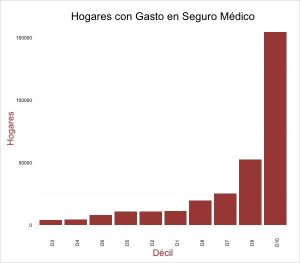
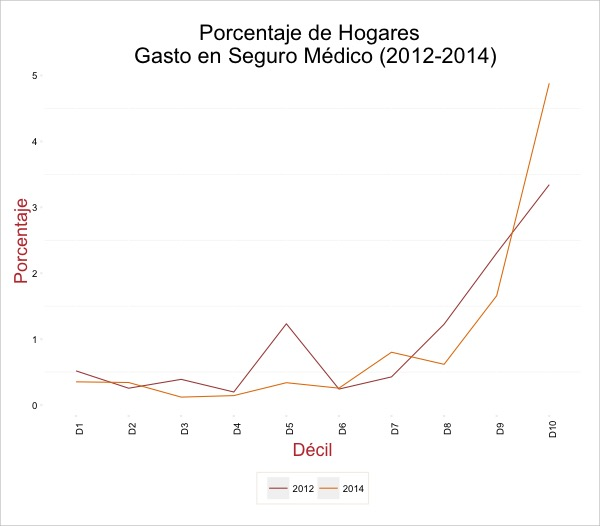
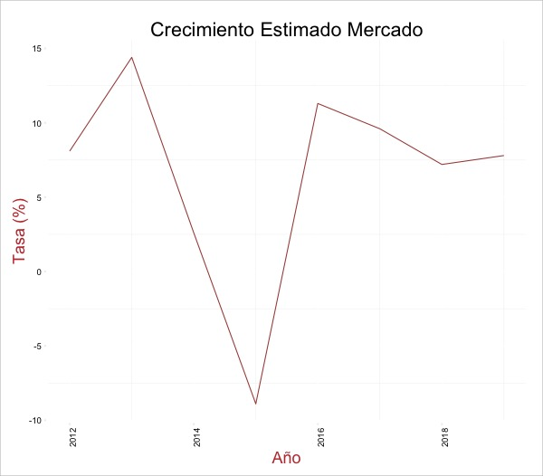
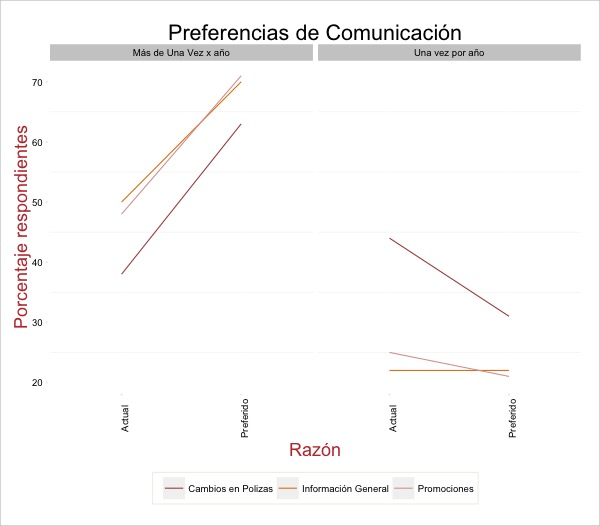
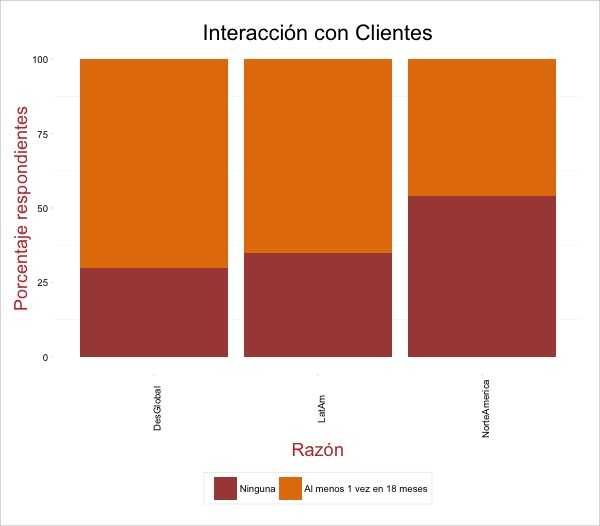
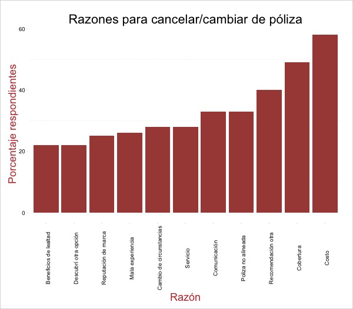
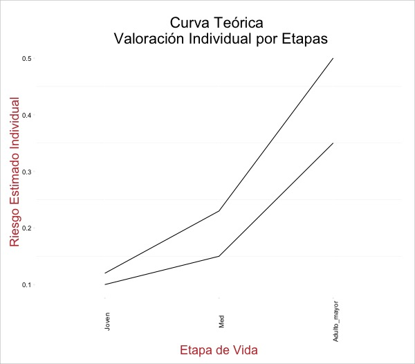

Propósito
De acuerdo con el plan estratégico de Aseguradora Patrimonial Vida de “incursionar en el mercado de Seguros Individuales mediante el desarrollo de nuevos productos”, este estudio preliminar pretende iniciar el proceso de:
- Descubrir y definir, a grandes rasgos, la estrategia de innovación.
- Definir nichos de potenciales clientes.
- Identificar el tipo de modelo para segmentar, en base a una definición, a potenciales clientes y su empate con la estrategia general de innovación.
- Trazar el giro conceptual de oferta de productos para esos potenciales clientes.
Mercado Actual
Como exploración inicial, analizamos el gasto general de los hogares en México, por décil de ingreso. Los datos provienen de los tabulados básicos de la ENIGH (2014 y 2012) (“Instituto Nacional de Estadística y Geografía,” 2015) [1].
Observamos que la mayoría (68.84%) de los hogares con seguros médicos [2] están distribuidos en los déciles IX y X, es decir el 20% de la población con mayores ingresos. Aún así, en el décil más alto, solamente el 4.88% de los hogares reporta un gasto en el rubro de seguros médicos, razón por la cuál diversos analistas (International, 2015) anuncian buenos prospectos de crecimiento para el futuro.

En forma tabular (datos del 2014):
| Decil | Hogares con Gasto | Porcentaje Hogares | Porcentaje Mercado |
|---|---|---|---|
| I | 11097 | 0.35 | 3.69 |
| II | 10791 | 0.34 | 3.59 |
| III | 3793 | 0.12 | 1.26 |
| IV | 4517 | 0.14 | 1.50 |
| V | 10704 | 0.34 | 3.56 |
| VI | 8083 | 0.26 | 2.69 |
| VII | 25363 | 0.80 | 8.43 |
| VIII | 19527 | 0.62 | 6.49 |
| IX | 52498 | 1.66 | 17.45 |
| X | 154559 | 4.88 | 51.36 |
En cuánto a gasto, la composición es todavía más marcada en el pico de la pirámide: aproximadamente 78% del mercado, por gasto, se encuentra concentrado en el último décil. Este, a su vez, representa poco más de medio punto porcentual del gasto total anual del décil.
| Decil | Gasto en Miles | Porcentaje Gasto | Porcentaje Mercado |
|---|---|---|---|
| I | 3927.47 | 0.02 | 0.19 |
| II | 5204.91 | 0.01 | 0.25 |
| III | 286.17 | 0.00 | 0.01 |
| IV | 2797.21 | 0.01 | 0.13 |
| V | 5945.15 | 0.01 | 0.29 |
| VI | 9948.08 | 0.01 | 0.48 |
| VII | 147865.74 | 0.19 | 7.12 |
| VIII | 46396.82 | 0.05 | 2.24 |
| IX | 227362.18 | 0.18 | 10.95 |
| X | 1626135.78 | 0.63 | 78.34 |
El gasto promedio en los últimos 10 deciles se redondea a: $10,521 pesos (décil X) por hogar, $4,330 (décil IX) y $2,376 (décil VIII). Claramente, se tratan de datos obtenidos mediante una encuesta con poco diseño para capturar el gasto en este mercado, pero aún así podemos intuir que el décil X pagaría poco más del doble por prima que un escalón abajo en la pirámide.
Comparando cifras de la misma encuesta en el 2012, observamos un incremento sustancial en el porcentaje de hogares pagando seguros en el espectro más alto (10% con más ingresos). El porcentaje en los déciles más abajo (VIII y IX) cae durante el mismo periodo.
Hogares con gasto por décil (datos 2012):
| Decil | Hogares con Gasto | Porcentaje Hogares | Porcentaje Mercado |
|---|---|---|---|
| I | 16284 | 0.52 | 5.09 |
| II | 7980 | 0.25 | 2.50 |
| III | 12274 | 0.39 | 3.84 |
| IV | 6227 | 0.20 | 1.95 |
| V | 38903 | 1.23 | 12.17 |
| VI | 7618 | 0.24 | 2.38 |
| VII | 13455 | 0.43 | 4.21 |
| VIII | 38698 | 1.23 | 12.10 |
| IX | 72780 | 2.31 | 22.76 |
| X | 105522 | 3.34 | 33.00 |
La comparativa de ambos periodos se puede observar mejor gráficamente:

Observamos la mismo información en forma tabular:
| Decil | Porcentaje Hogares (2012) | Porcentaje Hogares (2014) |
|---|---|---|
| I | 0.517 | 0.351 |
| II | 0.254 | 0.341 |
| III | 0.389 | 0.119 |
| IV | 0.197 | 0.142 |
| V | 1.232 | 0.338 |
| VI | 0.241 | 0.255 |
| VII | 0.426 | 0.801 |
| VIII | 1.226 | 0.617 |
| IX | 2.306 | 1.657 |
| X | 3.343 | 4.881 |
Con datos de la Asociación Mexicana de Industria de Seguros, podemos calcular, a manera aproximada el tamaño de mercado (en términos de prima emitida) en el último décil en 28 mil 661 millones de pesos, seguido de 8 mil 326 millones en el décil IX [3].
Se puede ver la metodología completa aquí
Tendencias Generales
~ | Mercado
El mercado de seguros, a nivel mundial, se encuentra inmerso en dos principales riesgos:
-
Riesgos regulatorios (una constante casi universal)
-
Disrupción innovadora por parte de:
-
Firmas de tecnología, que cuentan con mucha información y plataformas naturales en dónde ofrecer estos servicios, y
-
Pequeños competidores de nicho, que atienden cada vez a mercados más especializados.
-
Las grandes aseguradoras se han tardado, pero parecen estar reaccionando.
-
De las 129 aseguradoras más grandes del mundo con importantes planes de innovar en el corto plazo, 46% están basando su estrategia en: “desarrollar productos y servicios para nuevos clientes y segmentos de clientes” (Reader, 2014)
-
La punta de la lanza de esta innovación está en países desarrollados, en dónde hay un mercado más maduro (en países como México, la penetración todavía es bastante baja) y los pequeños tienen más oportunidades de ganar por el uso más extensivo del internet para compras.
In the U.S., life insurance companies have traditionally paid little attention to market segmentation, but there is clearly an opportunity for a low-cost, low-hassle provider to grab considerable share of wallet among consumers, especially ones under 40.
(Shatto & Costonis, 2010) -
El enfoque tiende a ser aquellos clientes cuyas necesidades todavía no están cubiertas con los productos actuales.
En México, principalmente gracias a efectos demográficos, analistas esperan un crecimiento sostenido de la demanda por seguros de vida, aunque esto este supenditado a dos supuestos:
- Crecimiento de los ingresos disponibles a misma tasa que mediados del siglo.
- Crecimiento demográfico como el estimado.

Aún así, se calcula que el mercado mexicano se encuentra con tasas considerablemente más bajas de penetración que sus pares como Brasil. (International, 2015)
~ | Consumidores
Los factores constantes, (tanto en encuestas independientes como en estudios académicos) de lo que cada vez buscan más los cliente de seguros son:
-
Mayor comunicación entre la aseguradora y el cliente. En un mundo constantemente “en línea”, los consumidores se han acostumbrado a obtener respuestas más en línea con su disponibilidad de tiempo:
If your airline can tell you exactly where your bag is throughout a series of overseas transfers, it stands to reason that your insurance company should be able to tell you where your claim is if your house has been flooded. And if you can communicate with your bank over Facebook, you will also likely expect to be able to talk to an insurer through the same channel.
(Reader, 2014)
En una encuesta realizada por Ernest & Young a 24 mil usuarios de seguros [4] durante el 2014, todos de manera global (pero más marcado en América Latina) dijeron querer más comunicación con sus aseguradoras sin incluir la razón (dudas generales, promociones o cambios de póliza).
Como se observa en la siguiente gráfica, mientras menos de 40% de los respondientes aseguran haber tenido comunicación en más de una ocasión durante un año con su aseguradora para realizar cambios en la póliza, casi 65% dijo que su modo preferido sería en al menos esa frecuencia. Los consumidores se muestran con alzas en todas las razones (es decir, quieren más comunicación de la que están obteniendo).

A decir, esto puede ser un efecto natural de las encuestas: más siempre es mejor en los ojos del consumidor. Pero los indicadores tan generalizados hablan de una falta de seguimiento a sus clientes por parte de las aseguradoras.
Este efecto es particularmente notorio en Norte América (Estados Unidos y Canadá), en dónde la interacción todavía es menor que en países en desarrollo: aproximadamente la mitad de los asegurados reportaron no tener interacción con su agente en los últimos 18 meses. En América Latina, la proporción baja a menos de 30% y en países en vías de desarrollo aún más. El hecho de que los clientes estén reportado que quieren más comunicación en todas las regiones sugiere que 18 meses es aún un horizonte muy grande de tiempo.

-
Otro factor importante es la sencillez en los productos. Aún y cuando comunicarse sea importante, el cliente considera más importante entender el producto. En este sentido, incluso la forma de empaquetar y presentar precios importa considerablemente al momento de vender (5).
-
Ambos factores previos tienen que ver con la oferta de marketing de la aseguradora y resultan ser muy importantes. Sin embargo, el consumidor no ha dejado atrás otros aspectos más “racionales” de su cálculo.
De acuerdo con (Littlewood, 2014), la razón más importante por la que personas se cambian de póliza en América Latina continua siendo el costo.

- En resumen, los clientes individuales quieren productos más sencillos, mejor precio y canales de comunicación más cómodos y profundos. Es decir, como sucede en industrias como el retail, quieren ser parte de una estrategia “omni-canal”
En este mismo sentido, (Reader, 2014) sugiere:
Those that hope to break the mold will want to look at less obvious sectors – such as retail or the airline sector – to find new sources of inspiration.
~ | Productos
- La mayoría de la innovación actualmente está generandóse en el servicio de productos ya existentes, pero en su formato “en-línea”.
Por ejemplo, en beaglestreet.com puedes comprar un producto en 10 minutos. Esta empresa (fundada en el 2012) ya tiene el 8% del mercado inglés. En este sitio resulta fácil consultar guías y agregar productos adicionales.
- Partnerships con empresas parecidas (hospitales, farmacias, gimnasios, vendors de información de compras) también son una fuente importante de innovación a través de la cadena. En general, lo que estos partnerships pretenden es obtener información de primera fuenta para poder ofrecer ellos o a traves de un tercer un producto “especializado” (que generalmente es solo una tasa menor a la tasa retail) a los miembros obtenidos por ese lado [6].
El esfuerzo de estos partnerships es también de mercadotecnia: las empresas de seguros de vida pequeña se están enfocando en ser consideradas como empresas de “estilo de vida”. El estilo de vida es naturalmente, saludable. Por ejemplo una aseguradora ofrece sustanciales descuentos en productos y servicios que te ayuden a ser más saludable.
- Hay una tendencia, entre todas las aseguradoras a mejorar la oferta de productos enfocados a segmentos nicho.
Determinantes de demanda
Los factores que influyen en la demanda por seguros de vida han sido en enfoque de literatura económica por muchos años [7], aunque se ha dado en terminos generales (a nivel macro) o por países específicos.
Como es de esperarse, numerosos estudios encuentran una relación positiva entre etapas de vida y la demanda por seguros, particularmente casarse, tener un primer hijo o sufrir del primer desempleo [8]. En este sentido, identificar estas etapas de vida o vender productos relacionados puede ser una importante área de oportunidad.
De acuerdo con 29 estudios diferentes, el ingreso resulta como la variable más explicativa a través de todos los escenarios: en 13 de 15 estudios mostró una relación positiva. Seguida están los bienes netos, otra medición de riqueza, que son significativamente positivos en 9 de 12 estudios. La tasa de dependencia, definida como personas proveedoras en el hogar sobre dependientes directos, mantiene una relación positiva con la demanda por seguros de vida en 6 de 9 estudios.
| Variable | Positiva | Negativa | Sin efecto |
|---|---|---|---|
| Ingreso | 13 | 1 | 1 |
| Ingreso del hogar | 1 | 0 | 0 |
| Bienes netos | 9 | 1 | 2 |
| Precio | 0 | 2 | 0 |
| Inflación | 2 | 1 | 1 |
| Precios esperados | 1 | 1 | 0 |
| Seguridad social | 2 | 3 | 1 |
| Edad | 3 | 4 | 6 |
| Educación | 6 | 3 | 0 |
| Tasa de dependencia | 6 | 2 | 1 |
| Genero | 1 | 0 | 0 |
| Estatus matrimonial | 0 | 2 | 2 |
| Población local | 1 | 0 | 0 |
| Precios esperados (personales) | 0 | 1 | 0 |
Otra vía para identificar clientes potenciales es a través de compras de “tickets grandes”, como propuesto por Yoon (“Finding Your Superconsumers When It Isn’t Obvious Who They Are,” 2014). De acuerdo con estudios de una consultora, los clientes que compran desproporcionadamente cosas grandes pero no relacionadas pueden ser superconsumidores en otras categorias grandes.
Ellos encontraron una relación importante entre seguros de vida y generadores de emergencia de energía eléctrica, otro producto caro pero que también requiere de planear en avance. Para este caso, obtener información cruzada por medio de vendors de información, ayudaría a identificar estas relaciones.
La expectativa de vida también se ha asociado directamente a mayor demanda por productos de seguros de vida, aunque esto puede ser en función de mayor ingreso (driver que influye casualmente en ambos) (International, 2015)
Para el caso mexicano, se espera un incremento sustancial en la población con más de 65 años, quienes proporcionalmente adquiren más seguros de vida. Las mujeres, que particularmente tienden a comprar más, agregarán la mayoría de los clientes nuevos en los próximos años, de acuerdo con Business Monitor (“Mexico Insurance Reports Q2-2012 - Q4-2015,” 2015)
Productos propuestos para exploración adicional
En vista a lo anterior, se proponen una serie de vías de exploración adicional para crear un producto (o modelo). Estos productos se pueden resumir en:
- Front-loading con beneficios
- Seguros “abiertos”
- Seguros como fondos corporativos
- Microseguros
- Seguros de Bienestar
- Seguros con componentes de ahorro
- Seguros con pagos diferidos
- Seguros de despido
A continuación una pequeña exploración de cada uno.
~ | Front-loading con beneficios
Como es bien conocido, la mayoría de las polizas de seguro de vida hacen uso del front-loading:
Front-loading implies that policyholders of long-term life insurance policies, especially those with impaired health, often have locked in premiums that are much more favorable than what they could obtain in the spotmarket.
(Parrish, 2014)
Sin embargo, como menciona (Liebertberg, Carson, & Dumm, 2012) los clientes con contratos en “albercas” de riesgo, tienden a cambiarse por etapa de vida, dependiendo de su valoración de riesgo individual.
El cliente en el tiempo cero (edad corta) tiene una valoración de su riesgo que es parecida a todos los demás clientes en esa misma etapa.
Pero a medida que el cliente obtiene más información sobre su estado de salud en la edad adulta, el cliente tiene mejor valoración de su riesgo. La diferencia entre su valor y lo pagado en el seguro puede ser negativa (el seguro paga más de lo que el considera “justo”) o positiva (el seguro paga menos).
Cuando la diferencia es positiva, el cliente tiende a buscar otro asegurador (volviéndose el seguro más semejante a un producto “commodity”). Liebertberg, et al. (“a Dynamic Analysis of E Demand for Life Insurance,” 2012) expone esto como dos curvas vistas a continuación. El cliente con bajo riesgo está identificado como la línea de abajo, que buscará siempre un seguro más barato.

Tras “aprender” su estado de salud en un tiempo posterior (el tiempo dos en un mundo de dos tiempos), el consumidor tiene tres opciones: (1) continuar con su contrato, (2) buscar otro contrato, (3) quedarse sin contrato alguno.
Si el consumidor tiene un perfil de riesgo menor al actuarialmente justo en su contrato (el cliente de bajo riesgo) y opta por salirse, el efecto es doblemente perjudicial para la aseguradora:
- El riesgo promedio del portafolio incrementa (solo se quedan los que, según ellos, tienen riesgo alto)
- Se pierden clientes a aseguradoras con precios menores (generalmente también las más grandes)
Para evitar esto, (Liebertberg, Carson, & Dumm, 2012) indica que se debe crear una barrera que dificulta el proceso de salirse de la póliza o en su defecto integrar este conocimiento de manera a priori a la decisión de precio de póliza. Si podemos discernir a una corta etapa al cliente cuyo riesgo incrementará a aquel que se mantendrá bajo de manera más fina, podemos ofrecer pólizas más baratas.
En este sentido, algunas aseguradoras ya incorporan analíticas de perfiles de redes sociales para identificar a jóvenes cuyo estilo de vida sea propenso a generar hábitos con mayor riesgo en un futuro.
Vantis Life (formerly Savings Bank Life Insurance or SBLI) uses a simple application incorporating predictive analytics to support its “EZ Life” products — basic term life insurance with policies in the $100,000 to $250,000 range. Predictive analytics anticipate mortality and longevity rates and help Vantis Life underwrite the policies without the medical examination and tests usually associated with life policies.
(Demaster & Lyons, 2015)
Por otro lado, si esto resulta muy difícil o caro, se puede generar una barrera de salida alta, que se cargue al frente la póliza.
Un producto así tendría la característica de pedir un deposito relativamente grande de una cantidad de dinero, que actuará como un componente de ahorro, cuyo interés acumulado irá a pagar la póliza de seguro en un porcentaje fijo y con el cuál se cobraría una penalización si decide retirar el depósito previo a un periodo especifico.
El ahorro se manejaría por un externo (casa de bolsa, por ejemplo). El beneficio para la aseguradora consiste en asegurar potencialmente un cliente por más tiempo en la póliza, mientras que este obtiene pagos menores de su seguro de vida.
Un ejemplo con números inventados sería algo así:
| Etapa | Depósito Inicial | Interés Generado | Costo Póliza | Pago Garantizado | Pago Anual |
|---|---|---|---|---|---|
| Pago inicial | $200,000 | - | 20,000 | 11,000 | 9,000 |
| Año 1 | - | 10,000 | 21,000 | 11,000 | 10,000 |
| Año 2 | - | 11,000 | 21,500 | 11,000 | 10,500 |
| Año 3 | - | 12,000 | 22,000 | 11,000 | 11,000 |
| Año 4 | - | 9,000 | 23,000 | 11,000 | 12,000 |
Para este entonces, el cliente habrá “ahorrado” $44,000 (sin calcular el costo de oportunidad, y sin el riesgo que esto implica de que no pague el interés garantizado). La penalización, por ejemplo de $75,000 implicaría que el cliente tendría que estar al menos otros 4 años en su póliza antes de que sea conveniente salirse.
El hecho de que “pierda” dinero al salirse es potencialmente un incentivo mayor que valorar los costos de oportunidad de haber mantenido el dinero ahí, puesto que además obtuvo una tasa de interés garantizada y una póliza a precio bajo.
Estos productos no necesariamente son nuevos (los componentes de inversión ya están presentes en productos premium de bancos en México). Sin embargo, el costo de entrada es sustancial (al menos un millón de pesos), por lo que se podría diseñar un producto más barato.
Cabe resaltar también que existen diversos incentivos fiscales adicionales en México que se podrían explorar. Por ejemplo, el ahorro del 0.6% de los impuestos sobre inversiones (si el plazo es considerado como ahorro del retiro) y legales (el producto puede preceder a los términos de un testamento).
~ | Seguros “abiertos”
En línea con la idea de hacer un mercado detallista, “one-stop shop” (especie de tienda de conveniencia) para productos de seguros, se ha explorado en países en vías de desarrollo una serie de productos “abiertos” o no empaquetados en el sentido tradicional.
En estos productos, no se cubre al cliente por una eventualidad que tiene muchas probables causas (como la muerte), sino a las causas en particular. El ejemplo más revelante es el seguro de Hyundai Life Zero en Corea del Sur:
Hyundai Life responded to many consumers' perceptions that life insurance products are too expensive and confusing by offering an à la carte health-protection policy called Hyundai Life Zero. Customers can pick the particular risks, such as cancer, that they want to cover at a fraction of the cost of comprehensive, long-term health-care policies. And the benefits of the plan are so simple to understand that it is offered online and by phone in addition to traditional channels. The insurer sold 15,000 policies in the product’s first six months.
(Maciaga B. & A., 2014)
A su vez, diversos estudios académicos demuestran que psicológicamente las personas tienden a sobre-estimar algunos riesgos de baja probabilidad y alta pérdida. Estas diferencias entre tasas percibidas de riesgo y el riesgo real, además permite a la aseguradora cobrar más de lo actuarialmente justo en casos dónde estas diferencias sean evidentes.
Por ejemplo, si las personas perciben una tasa de riesgo del 10% de un evento cuya verdadera tasa actuarial es de 5%, la aseguradora puede vender una prima con un costo implícito del 10% cuando su exposición es menor.
Ejemplos de estos abundan: el cancer, volar en avión, etc.
Para los clientes, el beneficio de estos productos es la sencillez tan añorada: entras, sales y compras los productos que quieras. Desde el punto de vista de la aseguradora, sin embargo, un sistema tan abierto conlleva el riesgo de que es poco predecible el flujo de los clientes y sus pagos.
En este sentido, el diseño de los beneficios y el cobro se vuelve esencial.
~ | Seguros como fondos corporativos
Una ventaja muy conocida de los seguros es la característica de generar flujos económicos. Esto puede ser particularmente atractivo para las empresas que están expuestas a flujos irregulares o con obligaciones a tasas variables (y especialmente en un entorno de volatilidad).
De hecho en algunos países, el seguro corporativo se ha vuelto un buen modelo de financiamiento para las empresas, como se explica a continuación:
In the United States business environment, corporate-owned life insurance (COLI) has emerged as a popular corporate finance tool. Companies often purchase institutionally priced or retail-priced life insurance policies on their executives and/or owners, and maintain these policies as corporate assets. In essence, these are key person policies targeted at providing financing for the company's long-term obligations.
(Parrish, 2014)
Si bien las empresas sofisticadas en México pueden ya tener acceso a este tipo de financiamiento (o tasas de países avanzados), el hecho de que la banca PyME tenga una baja penetración proporciona un buen mercado potencial.
Potencialmente, a empresas medianas se podría empaquetar un plan de seguro bajo el cual el dinero de la prima se presta a la empresa a tasas mejores (y sin tanta dificultada burocrática) que las ofrecidas por la banca tradicional.
Los COLI en Estados Unidos además tienen beneficios impositivos, como se explica en este artículo. La prima pagada por el seguro es deducible, el beneficiario de la prima es la misma empresa y cuando el empleado (o ex empleado) fallece, la empresa tiene derecho a cobrar el seguro, teóricamente acumulado en las primas que paga, sin tener que pagar impuestos por esta cantidad.
El riesgo y atractivo naturalmente puede variar sustancialmente en México, dónde la regulación puede ser diferente. Por ejemplo, particularmente la regulación sobre “interés asegurable”.
Microseguros
Por mucho el segmento menos aprovechado de la industria de los seguros es a los sectores tradicionalmente con ingresos muy bajos como para acceder a seguros tradicionales.
Si bien muchos saben del potencial, pocas aseguradoras se han arriesgado a crear un producto específico para el segmento, el problema principal es que todavía se trata de un modelo poco probado para escalarse. El margen puede llegar a ser bajo y los costos tan altos de administrarlo, que la escala es una condición necesaria para la rentabilidad:
The potential market for microinsurance is assumed to be enormous, and has captured the attention of large multinational insurers and the global reinsurance community. Nonetheless, experience has shown that, at enterprise level, microinsurance takes longer than expected to achieve meaningful scale, and perhaps even longer to achieve profitability at scale.
(Koven, 2011)
El selling proposition de este tipo de seguros es que su mercado meta es personas con ingresos bajos o medianos, pero no necesariamente en pobreza extrema. Los pocos productos que existen aseguran cantidades de alrededor de 10 mil dólares. Entre las barreras más importantes se encuentran;
-
Conocimientos financieros deficientes (Koven, 2011). La responsabilidad sobre quien debe educar al consumidor todavía no está bien definida y además puede ser cara y tener potenciales beneficios que se prestan a una “tragedia de los comunes” (educar a una población implica costos que asumirá un solo actor pero cuyos beneficios los verán muchos otros competidores).
-
Como en cualquier otro instrumento enfocado en los sectores bajos de la pirámide, se requiere de inmensa escala para ser rentable.
-
Los temas regulatorios y legales también pueden ser un tema importante a considerar, al tratarse de personas que tradicionalmente han sido protegidos por leyes poco optimas para el mercado.
No obstante, de acuerdo con un cálculo sencillo de datos del CONEVAL, en México existe un mercado de aproximadamente 31.5 millones de personas en el 2014, concentrada en términos de población en los estados de México (60.6% de la población), Distrito Federal (46.2%) y Veracruz (68.45%). Este mercado está cubierto en aproximadamente 15% (Koven, 2011), aunque este dato incluso puede tratarse de una sobre-estimación, puesto que no existen productos ampliamente difundidos.
Algunos países, como Brasil, Nigeria y Ghana tienen casos de éxito en estos productos, pero no sin sustancial apoyo del gobierno local y organizaciones no-gubernamentales como el Bill & Melinda Gates Foundation (Giesbert, Steiner, & Bendig, 2011; Silva & Afonso, 2013).
~ | Seguros de bienestar
Los seguros con tasas variables o de “bienestar” son una alternativa para clientes que: 1) les gusta los retos, 2) quieren “mejorar” su vida.
En esta categoría de productos, la aseguradora vende un “plan integral de salud”. El plan incluye un seguro de vida con una tasa preferencial, bajo las siguientes condiciones:
-
El cliente se compromete a seguir un plan que se crea en conjunto con otra empresa de bienestar (por ejemplo un despacho de nutriologos, etc).
-
El cliente comparte esa información con la aseguradora con el fin de que a llegar a metas especificas de bienestar (bajar de peso, revisión médica, vacunas) la tasa se revisa a la baja.
El producto se vende más como un plan de mejora de salud, aportando más comunicación entre la aseguradora y el cliente (se requiere de constante feedback ) y diferenciandóse de otros seguros en el mercado.
El beneficio es doble para la aseguradora;
-
La probabilidad de reducir las tasas de mortalidad entre su pool de asegurados, a la vez que compite con empresas cuyas tasas están basadas en riesgos potencialmente más altos.
-
Obtiene información que se puede vender a un tercero - por ejemplo empresas de publicidad y marketing para ofrecer membresías a otros clubes parecidos (gyms) o productos.
El riesgo de estos productos es evidentemente actuarial: si se calculan de manera deficientes los cambios en las probabilidades en base a las acciones del plan de salud, el producto puede terminar siendo más barato que lo actuarialmente justo, afectando la salud financiera de la aseguradora.
~ | Seguros con Ahorro
Este tipo de seguro se ha vuelto más común en México en los últimos años (GNP estima que la mitad de sus productos de seguros tiene algún componente de ahorro (International, 2015) y 68% de esos corresponden a un plan específico de ahorro).
El esquema es parecido a un seguro con front-loading, con la diferencia de que no se requiere de un depósito inicial de dinero sino que se hace mediante un plan de ahorro.
La ventaja de estos seguros es evidentemente en el flujo, pues hay penalizaciones severas por dejar de pagar el seguro. Los asegurados obtienen un producto relativamente caro de ahorro, pero prefieren ser presionados a ahorrar (muchos no creen poder hacerlo sin un compromiso explícito con una institución).
Aunque estos productos ya no son nuevos, fácilmente se puede jugar con las tasas y términos, para ofrecer un producto diferente al mercado. Existe también espacio para simplificar aún más el producto y venderlo en masa. El beneficio es que no se requiere de una campaña grande de “concientización” para dar a conocer el producto al mercado.
Asimismo, el seguro permite proteger contra lo que se ha llamado la paradoja de la longevidad, el miedo a vivir más de lo que los recursos que tienes ahorrado te permiten:
Then there is the “longevity paradox.” People are living longer now — a lot longer, in fact. [...] Fears of an early death have now been replaced by fears of outliving ones’ resources. This fear has grown in recent years with the steady disappearance of defined-benefit pension plans.
(Demaster & Lyons, 2015)
~ | Seguros con pagos diferidos
Una de las desventajas de los seguros de vida (desde el punto de vida de la aseguradora) es que cuando se propicia el evento (la muerte), el pago de la prima, en general se hace en lump-sum, dispensandóse toda al beneficiario.
En este sentido, existe espacio para innovar. Los pagos diferidos pueden ser una buena opción para clientes que no confían en el buen uso de los recursos cuando se cobre la póliza.
Bajo este esquema, el cliente estipula una forma de pago en mensualidades o en tiempos específicos del beneficiario. Si bien no se trata de algo muy novedoso, si garantiza al contratante más claridad sobre el uso de los recursos cuando se cobre la póliza y propicia una especie de “valor agregado” a cualquier producto.
El beneficio desde luego para la aseguradora es el trato con otro cliente potencial y un flujo de dinero mucho más predecible.
~ | Seguros de despido
Como su nombre implica, los seguros con desempleo son seguros con un componente que cubre una eventualidad de desempleo personal. Sin embargo, el principal problema con esto es encontrar a aquellos que no representen riesgo moral.
El seguro de desempleo básicamente depende de dos componentes para ser exitoso:
-
Una manera objetiva de comprobar el estado de desempleo y sin riesgo de fraude,
-
Datos suficientes para extrapolar riesgos de desempleo.
No obstante, un seguro enfocada en el mismo suceso, pero para los empleadores puede funcionar para prevenir crisis y aminorar los cambios abruptos en caso de una caída en ventas o producción.
Si bien la mayoría de las empresas tienen un “fondo” o dinero presupuestado para finiquitar a personal durante un periodo de crecimiento “normal”, las circunstancias de volatilidad pueden propiciar caídas en ventas abruptas, que inciten a mayores recortes de personal que los presupuestados.
En este caso, el seguro serviría como un estabilizador automático. La empresa paga una prima mensual, misma que se paga cuando las condiciones en el contrato estipulen necesaria un recorte de personal importante.
Bajo estas circunstancias, a la empresa se le mantiene cierta agilidad al adaptarse a crisis económicas o de demanda, permitiéndoles manejar sus finanzas de corto plazo de manera más sana.
~ | Matriz Resumen
Un resumen de estos productos exploratorios:
| Producto | Ventaja de Venta | Ingreso Deseable | Edad Meta | Cliente Riesgo [9] | Compromisos Familia | Conocido en México |
|---|---|---|---|---|---|---|
| Front-Loading | Pagas menos cada año | Alto | Jóven | X | Bajo | X |
| Abiertos | Pagas solo lo que usas | Mediano o Bajo | Jóven | X | Bajo | |
| Corporativos | Financiamiento barato | Mediano | - | - | X | |
| Microseguros | Te aseguras | Mediano o Bajo | Jóven o Mediana | Medianos | ||
| Bienestar | Mejoras tu vida | Alto | Mediana | X | Medianos | |
| Ahorro | Ahorra para el futuro | Mediano o Alto | Mediana o Alta | Alto | X | |
| Pagos Diferidos | Asegura su cómodo futuro | Alto | Mediana o Alta | Alto | X | |
| Despido | Previene la crisis | Alto | - | - |
Fuentes
- Leisten, H. (2015). Perspectives in Insurance. BCG Perspectives. Retrieved from https://www.bcgperspectives.com/content/articles/insurance_perspectives_in_insurance/
- Demaster, B., & Lyons, P. (2015). How Life Insurers Can Bring Their Business into the 21st Century. Harvard Business Review. Retrieved from https://hbr.org/2015/03/how-life-insurers-can-bring-their-business-into-the-21st-century
- Huber, C., & Schmeiser, H. (2015). HOW DOES PRICE PRESENTATION INFLUENCE CONSUMER CHOICE? THE CASE OF LIFE INSURANCE PRODUCTS, 431(2), 401–431. doi:10.1111/j.1539-6975.2013.12026.x
- Bohnert, A., Gatzert, N., & Jorgensen, P. L. (2015). On the management of life insurance company risk by strategic choice of product mix, investment strategy and surplus appropriation schemes. Insurance: Mathematics And Economics, 60, 83–97. doi:10.1016/j.insmatheco.2014.11.003
- Katt, P. C. (2015). History of Cash Value Life Insurance and Implications for Existing Policies, (August).
- Millo, G., & Carmeci, G. (2015). A Subregional Panel Data Analysis of Life Insurance Consumption in Italy. Journal Of Risk and Insurance, 340(2), n/a–n/a. doi:10.1111/jori.12023
- International, B. M. (2015). Mexico Insurance Reports Q2-2012 - Q4-2015.
- Larson, S. J. (2015). Considering Time in a Life Insurance Needs Analysis, (September), 62–72.
- Maciaga B., S. A., Shah A., & A., S. (2014). The Fundamental Trends Reshaping Life Insurance. Retrieved from https://www.bcgperspectives.com/content/articles/insurance_fundamental_trends_reshaping_life_insurance/
- Littlewood, J. (2014). 2014 Global Insurance Outlook. Ernst &Amp; Young, Global Reports. Retrieved from http://www.ey.com/Publication/vwLUAssets/EY-latin-america-insurance-outlook-2014/$FILE/EY-latin-america-insurance-outlook-2014.pdf
- Yoon, E. (2014). Finding Your Superconsumers When It Isn’t Obvious Who They Are. Harvard Business Review. Retrieved from https://hbr.org/2014/05/finding-your-superconsumers-when-it-isnt-obvious-who-they-are
- Reader, G. (2014). A New World of Opportunity: The insurance innovation imperative. KPMG Global Insights. Retrieved from https://www.kpmg.com/CN/en/IssuesAndInsights/ArticlesPublications/Documents/A-New-World-of-Opportunity-insurance-innovation-O-201509.pdf
- Parrish, S. (2014). IRM Permanent Life Insurance in Financial Planning , (October), 30–33.
- Tool, C. F. (2014). Insurance & Risk Management, (March), 34–37.
- Hendren, N. (2013). Private Information and Insurance Rejections. Econometrica, 81(5), 1713–1762. doi:10.3982/ECTA10931
- Sen, S., & Madheswaran, S. (2013). Regional determinants of life insurance consumption: Evidence from selected Asian economies. Asian-Pacific Economic Literature, 27(2), 86–103. doi:10.1111/apel.12024
- Wu, X., & Gan, L. (2013). Multiple Dimensions of Private Information in Life Insurance Markets. Retrieved from http://www.nber.org/papers/w19629
- Silva, K. R., & Afonso, L. E. (2013). A Study on life microinsurance in Brazil. Brazilian Business Review (English Edition), 10(3), 130–155. doi:10.15728/bbr.2013.10.3.6
- Lorson, J., & Wagner, J. (2013). Sales Efficiency in Life Insurance: On Growth and Profitability in the German Market. I.VW-HSG Working Paper, (2009). doi:10.1057/gpp.2013.35
- Gatzert, N., Holzmüller, I., & Schmeiser, H. (2012). Creating Customer Value in Participating Life Insurance. Journal Of Risk and Insurance, 79(3), 645–670. doi:10.1111/j.1539-6975.2011.01453.x
- Sliwinski, A., Michalski, T., & Roszkiewicz, M. (2012). Demand for Life Insurance—An Empirical Analysis in the Case of Poland. The Geneva Papers On Risk and Insurance Issues and Practice, 38(1), 62–87. doi:10.1057/gpp.2012.21
- Hong, J. H., & Rı́os-Rull José-Vı́ctor. (2012). Life Insurance and Household Consumption. American Economic Review, 102(7), 3701–3730. doi:10.1257/aer.102.7.3701
- Liebertberg, A. P., Carson, J. M., & Dumm, R. E. (2012). a Dynamic Analysis of E Demand for Life Insurance, 79(3), 619–644. doi:10.1111/j.l539-6975.2011.01454.x
- Koven, E., R. & Zimmerman. (2011). Is There a Business Case for Microinsurance? A review of recent literature. Retrieved from http://www.microinsurancecentre.org/resources/documents/business-case-for-microinsurance/is-there-a-business-case-for-microinsurance-a-review-of-recent-literature.html
- Giesbert, L., Steiner, S., & Bendig, M. (2011). Participation in Micro Life Insurance and the Use of Other Financial Services in Ghana. Journal Of Risk and Insurance, 78(1), 7–35. doi:10.1111/j.1539-6975.2010.01405.x
- Paper, W., Econ, B., & Papers, D. (2011). The Effect of Secondary Markets on Equity-Linked Life Insurance with Surrender Guarantees, 81(4), 943–968. doi:10.1111/j.1539-6975.2013.12003.x
- Fang, H., & Kung, E. (2010). How does life settlement affect the primary life insurance market? Retrieved from http://www.nber.org/papers/w15761
- Shatto, P. D., & Costonis, M. (2010). The Life Insurance Industry Needs To Get With The Times. Forbes. Retrieved from http://www.forbes.com/2010/01/13/life-insurance-industry-leadership-managing-marketing.html
- Gatzert, N. (2010). The secondary market for life insurance in the United Kingdom, Germany, and the United States: Comparison and overview. Risk Management And Insurance Review, 13(2), 279–301. doi:10.1111/j.1540-6296.2010.01187.x
- Ibiwoye, a, Ideji, J., & Oke, B. (2010). the Determinants of Life Insurance Consumption in Nigeria: a Co-Intergration Approach. INTERNATIONAL JOURNAL Of ACADEMIC RESEARCH, 2(4), 351–359. Retrieved from http://scholar.google.com/scholar?hl=en&btnG=Search&q=intitle:THE+DETERMINANTS+OF+LIFE+INSURANCE+CONSUMPTION+IN+NIGERIA:+A+CO-INTERGRATION+APPROACH#0
- Sinha, R. P. (2010). Revenue Maximizing Efficiency of Life Insurance Companies : Some Indian Evidence.
- Harris, R. L. (2009). Life Insurance and Wealth A Perfect Combination for the Ultra-Afluent, 114–119.
- Baldwin, B. G. (2008). Life Insurance Considerations in a Rapidly Changing World, (August).
- Khurana, S. (2008). Customer Preferences in Life Insurance Industry in India, VI(3), 60–69.
- Johnson, R. A. Y. C. (2008). Funding in the Life Space, 62–70.
- Athma, P., & Kumar, J. R. (2007). An Explorative Study of Life Insurance Purchase Decision Making : Influence of Product and Non-Product Factors, IV(4), 40–49.
- Lenten, L. J. a., & Rulli, D. N. (2006). A Time-Series Analysis of the Demand for Life Insurance Companies in Australia: An Unobserved Components Approach. Australian Journal Of Management, 31(1), 41–66. doi:10.1177/031289620603100104
- Cowley, A., & Cummins, J. D. (2005). Life Insurance Assets, 72(2), 193–226.
- Pauly, M. V., Withers, K. H., Hershey, J. C., Asch, D. a, Subramanian-viswanathan, K., Lemaire, J., & John, C. (2003). Price Elasticity of Demand for Term Life Insurance and Adverse Selection, 1–44. Retrieved from http://www.nber.org/papers/w9925
- Hendel, I., & Lizzeri, A. (2003). The Role of Commitment in Dynamic Contracts: Evidence from Life Insurance. The Quarterly Journal Of Economics, 118(1), 299–328. doi:10.1162/00335530360535216
- Berry, R. J. [S. (2002). The Future of Life. Jrsm, 95(10), 520–521. doi:10.1258/jrsm.95.10.520
- Brown, J. R. (2001). Are the Elderly Really Over-Annuitized? New Evidence on Life Insurance and Bequests. Themes in the Economics of Aging (pp. 91–126).
- Brown, J. R., & Poterba, J. M. (2000). Joint Life Annuities and Annuity Demand by Married Couples. The Journal Of Risk and Uncertainty, 67(4), 527–554. doi:10.2307/253849
- Auerbach, A. J., & Kotlikoff, L. J. (1989). HOW RATIONAL IS THE PURCHASE OF LIFE INSURANCE?, (3063).
- Author, C., Lintner, J., Piper, T. R., Fortune, P., Lintner, J., & Fortune, P. (1977). Volume Publisher : NBER Forward Commitment Decisions of Life Insurance Companies for Investments in Bonds and Mortgages, 4(5), 1–50.
- O’leary, J. (1960). Forward Investment Commitments of Life Insurance Companies Forward Investment Commitments of Life Insurance Companies, 325–350.
Notas
-
Expandidos por factores de estimaciones CONAPO. ↩
-
La categorización de seguro médico segun la Clasificación Nacional de Gasto incluye los rubros J071 (Cuotas a compañías de seguros) y N009, más no es exhaustivo. ↩
-
El cálculo se obtiene multiplicando el total de primas emitidas de todo el mercado a diciembre 2014 por la participación de gasto de cada décil en el gasto total del rubro de clasificación “grande” del ENIGH, que incluye los rubros J071 (Cuotas a compañías de seguros) y N009. Sin embargo, este no se encuentra ponderado por el peso relativo de cada subsector. ↩
-
Seguros de vida y de autos. ↩
-
De acuerdo con un experimento elaborado en Suiza (Huber & Schmeiser, 2015) entre jovenes de 25 a 35 años, los participantes más experimentados en la compra de instrumentos financieros preferían productos empaquetados, mientras que los menos experimentados no veían diferencia entre ambas propuestas. ↩
-
Estos partnerships han sido generalmente expuestos en (Baldwin, 2008; Liebertberg, Carson, & Dumm, 2012; Athma & Kumar, 2007) ↩
-
Diferentes estudios encuentran relación nula pero en el agregado. Datos panel en (missing reference) muestran mejor el panorama. ↩
-
(missing reference) y (missing reference) repasan estudios de manera considerable. ↩
-
Apertura a tomar riesgos o volatilidad. ↩